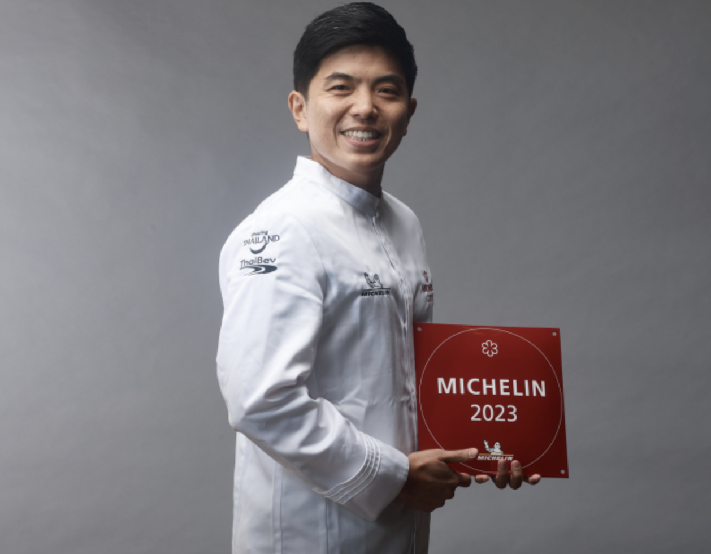

Jay Fai
Known as the “Queen of Thai Street Food,” Jay Fai is a Michelin-starred chef in Bangkok. She is famous for her **crab omelettes, wok-fried seafood, and fiery dishes** cooked over charcoal. Her dedication to authentic flavors has made her a global culinary icon.

Chef Tonn
Chef Tonn, a rising star in Thai cuisine, is renowned for his **innovative approach to traditional dishes**. Blending classic Thai flavors with modern techniques, he has gained recognition for his creativity, presentation, and dedication to fresh, high-quality ingredients.